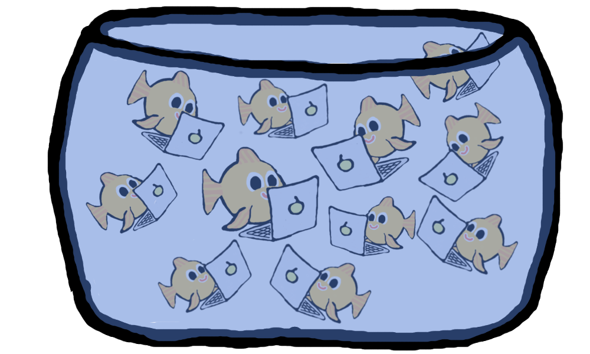

UX DX 2017
Re- decentralising the Web
Mathias Buus @mafintosh

Centralisation came with many issues
No Privacy
Censorship
Silos
Why not decentralised systems?
Why not decentralised p2p systems?
BitTorrent?
The Web is not just static file transfer
The Web is live
npm install -g dat
# sharing a folder
dat ./some-folder-to-share
# syncing a dat to a folder
dat dat://some-dat-key ./some-folder
P2P websites
P2P websitescontainers
npm install -g dat-container
A bunch of containers:dat://cd0efc3aa5db75e15609850937152200f4e9e6bb39b4734e71588a6b2913348a
sudo dat-container \
-k dat://cd0efc3aa5db75e15609850937152200f4e9e6bb39b4734e71588a6b2913348a \
-i node-on-arch.img \ # which image in the dat should be run
-d my-container \ # where on disk is data stored
-b # do a full boot
Slides are available here:dat://4cd7e1c5e7c20cd8e9589c1237f310e9390a283c3fd85c3c6c1bf359f1516dd5
Thank you